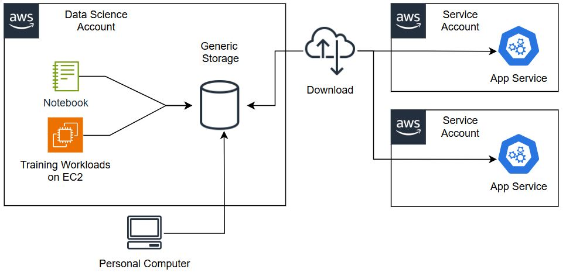

Bởi Daniel Vieira, Debora Fanin, Gopi Mudiyala và Saurabh Trikande — ngày 08 tháng 4 năm 2025
Có trụ sở tại São Paulo, Brazil, iFood là công ty tư nhân hàng đầu trong lĩnh vực công nghệ thực phẩm (food-tech) ở Mỹ Latinh, xử lý hàng triệu đơn đặt hàng mỗi tháng.
iFood đã nổi bật nhờ chiến lược ứng dụng công nghệ tiên tiến trong vận hành. Với sự hỗ trợ từ AWS, iFood phát triển hạ tầng suy luận machine learning (ML) mạnh mẽ, sử dụng các dịch vụ như Amazon SageMaker để huấn luyện và triển khai mô hình hiệu quả.
Sự hợp tác này giúp iFood không chỉ tối ưu hóa quy trình nội bộ, mà còn mang lại giải pháp sáng tạo cho đối tác giao hàng và nhà hàng.
Nền tảng ML của iFood bao gồm một tập hợp các công cụ, quy trình và luồng làm việc được xây dựng nhằm mục tiêu:
Để đạt được mục tiêu này, iFood sử dụng Amazon SageMaker, giúp đơn giản hóa quy trình huấn luyện và triển khai, đồng thời tự động hóa các tác vụ quan trọng như:
iFood đã tận dụng sức mạnh của nền tảng AI/ML để nâng cao trải nghiệm khách hàng ở nhiều điểm chạm:
Đề xuất cá nhân hóa:
Các mô hình AI phân tích lịch sử đặt hàng, sở thích và ngữ cảnh của khách hàng để đề xuất món ăn và nhà hàng phù hợp nhất, giúp gia tăng mức độ hài lòng và số lượng đơn đặt hàng.
Theo dõi đơn hàng thông minh:
AI theo dõi đơn hàng thời gian thực, dự đoán chính xác thời gian giao hàng dựa trên dữ liệu giao thông, thời gian chuẩn bị món và vị trí shipper.
Dịch vụ khách hàng tự động:
Chatbot được huấn luyện bằng AI xử lý ngôn ngữ tự nhiên (NLP) giúp xử lý nhanh chóng hàng nghìn yêu cầu của khách hàng mỗi ngày, mang lại trải nghiệm hỗ trợ thống nhất và hiệu quả.
Trợ lý mua sắm hàng tạp hóa:
Ứng dụng tích hợp mô hình ngôn ngữ tiên tiến, cho phép khách hàng nhập hoặc nói danh sách mua sắm, và AI tự động tạo danh sách chi tiết.
Thông qua các sáng kiến AI này, iFood dự đoán được nhu cầu, tối ưu quy trình và nâng cao trải nghiệm khách hàng, củng cố vị thế là nền tảng công nghệ thực phẩm hàng đầu khu vực.

Hình 1. Kiến trúc kế thừa của iFood (trước khi tích hợp nền tảng ML nội bộ.)
Trước đây, các nhóm khoa học dữ liệu và kỹ thuật tại iFood hoạt động tách biệt —
nhà khoa học dữ liệu xây dựng mô hình, trong khi nhóm kỹ thuật gặp khó khăn khi tích hợp mô hình vào sản xuất.
Sự thiếu liên kết này khiến việc triển khai mô hình ML thời gian thực trở nên khó khăn.
Để giải quyết vấn đề này, iFood xây dựng nền tảng ML nội bộ – ML Go!, giúp hợp nhất và đơn giản hóa quy trình phát triển mô hình từ huấn luyện đến triển khai.
Nền tảng này cho phép các nhóm xây dựng, đào tạo và triển khai mô hình liền mạch, đồng thời tương tác với nhóm kỹ thuật để tích hợp vào ứng dụng trực tuyến hoặc ngoại tuyến.
Hình 2. Kiến trúc cập nhật sau khi tích hợp nền tảng ML nội bộ iFood.
Nền tảng ML Go! cũng tập trung vào các khả năng suy luận mới, kết nối với nền tảng dữ liệu và nền tảng đặc trưng (feature platform), giúp tăng trải nghiệm người dùng và hiệu suất mô hình.
Một cải tiến nổi bật là ML Go! Gateway — lớp trừu tượng kết nối SageMaker Endpoints và Jobs, cho phép tách biệt mối quan tâm giữa các endpoint, tăng tốc độ và hiệu quả triển khai.
Các endpoint được quản lý qua ML Go! CI/CD, giảm thời gian thay đổi và rủi ro khi triển khai.
Một tính năng quan trọng của nền tảng ML hiện đại là tiêu chuẩn hóa dịch vụ ML và AI bằng cách đóng gói mô hình và phụ thuộc vào container Docker.
SageMaker cung cấp các container dựng sẵn cho những framework phổ biến như TensorFlow, PyTorch, XGBoost… giúp triển khai nhanh chóng và ổn định.
Bên cạnh đó, SageMaker hỗ trợ container tùy chỉnh, cho phép người dùng mang theo mã nguồn, thư viện và phụ thuộc riêng — đặc biệt hữu ích khi làm việc với framework ít phổ biến hoặc yêu cầu đặc thù.
iFood tập trung mạnh vào việc sử dụng container tùy chỉnh cho đào tạo và triển khai, đảm bảo môi trường nhất quán và tái tạo được.
Công cụ nội bộ BruceML giúp đóng gói mã huấn luyện và phục vụ mô hình ngay từ đầu, tích hợp liền mạch với SageMaker cho phép tận dụng các tính năng như tinh chỉnh siêu tham số, triển khai, và giám sát mô hình.
Hình 3. Quy trình CI/CD tự động hóa qua SageMaker Pipelines.
Để đảm bảo mô hình hoạt động hiệu quả và chính xác lâu dài, iFood sử dụng Amazon SageMaker Pipelines nhằm xây dựng hệ thống CI/CD cho ML, tự động hóa toàn bộ quy trình huấn luyện và triển khai.
Quy trình bắt đầu từ ML Go! CI/CD pipeline, đẩy các artifact chứa logic triển khai và huấn luyện mô hình.
Sau khi huấn luyện hoàn tất, mô hình được đăng ký tự động vào SageMaker Model Registry để quản lý phiên bản và bảo mật.
Tùy theo yêu cầu suy luận:
Tự động hóa đầu-cuối giúp iFood nhanh chóng lặp lại, triển khai và điều chỉnh mô hình, đảm bảo hiệu suất liên tục.
iFood sử dụng khả năng suy luận của SageMaker cho cả thời gian thực lẫn xử lý hàng loạt.
Các endpoint SageMaker được tích hợp vào ứng dụng khách hàng, giúp dự đoán tức thì.
Trong khi đó, Batch Transform hỗ trợ xử lý dữ liệu lớn cho các trường hợp như đề xuất món ăn hoặc phân tích đối tác nhà hàng.
Hình 4. Mô hình suy luận hỗn hợp (real-time + batch) trên SageMaker.
iFood đã đóng vai trò quan trọng trong việc phát triển các tính năng mới cho SageMaker Inference, bao gồm:
Hình 5. Các cải tiến về SageMaker Inference thông qua hợp tác cùng iFood.
Nhờ tận dụng các khả năng của Amazon SageMaker, iFood đã chuyển đổi hoàn toàn cách tiếp cận với ML và AI, rút ngắn vòng đời mô hình và mở rộng quy mô ứng dụng thông minh.
Nền tảng ML Go! cùng sự tích hợp SageMaker Pipelines và SageMaker Inference giúp iFood:
Sự hợp tác giữa iFood và đội ngũ AWS không chỉ thúc đẩy hiệu suất suy luận AI toàn cầu, mà còn trở thành hình mẫu triển khai ML hiện đại cho nhiều doanh nghiệp khác.
Daniel Vieira – Giám đốc Kỹ thuật Machine Learning tại iFood, có hơn 10 năm kinh nghiệm trong phát triển nền tảng và hệ thống ML. Ông sở hữu bằng Cử nhân và Thạc sĩ Khoa học Máy tính tại Đại học Liên bang Minas Gerais (UFMG). Ngoài công việc, ông yêu thích âm nhạc, triết học và cà phê.
Debora Fanin – Giám đốc Giải pháp Khách hàng cấp cao tại AWS, phụ trách chuyển đổi kỹ thuật số cho doanh nghiệp tại Brazil. Cô có bằng Thạc sĩ Quản trị (FEI) và chứng chỉ Amazon Solutions Architect Associate.
Saurabh Trikande – Giám đốc sản phẩm cấp cao của Amazon Bedrock và Amazon SageMaker Inference, chuyên về triển khai AI phức tạp và tối ưu hóa chi phí.
Gopi Mudiyala – Giám đốc tài khoản kỹ thuật cao cấp tại AWS, hỗ trợ khách hàng trong lĩnh vực tài chính trong hành trình chuyển đổi ML. Anh đam mê công nghệ và thường chơi cầu lông, du lịch cùng gia đình.